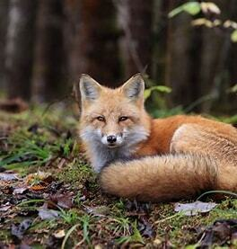

Foxes are any of the omnivorous, dog-like mammals belonging to the family Canidae. Characterized by a small- or medium-sized furry body, these animals can be easily distinguished by their flattened skull, a narrow snout, upright triangular ears, and bushy tail. They have black markings between their eyes and noses, while the color of their tail tip is different than the rest of their bodies